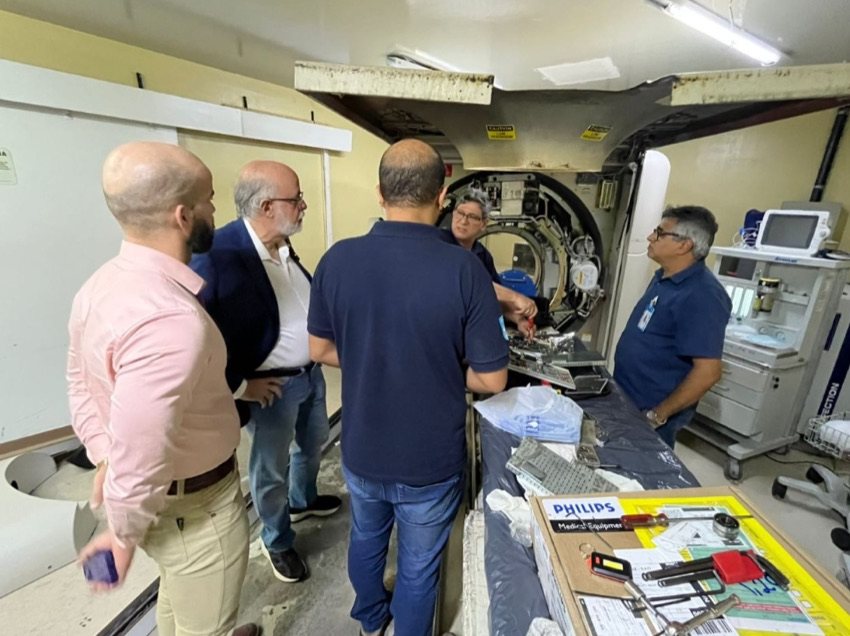
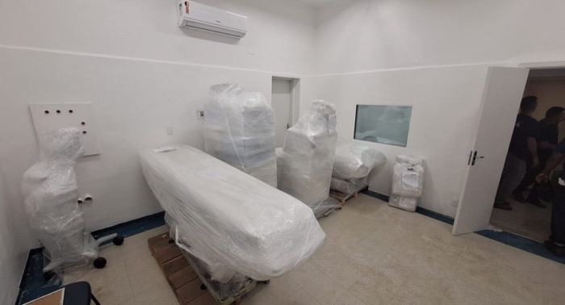
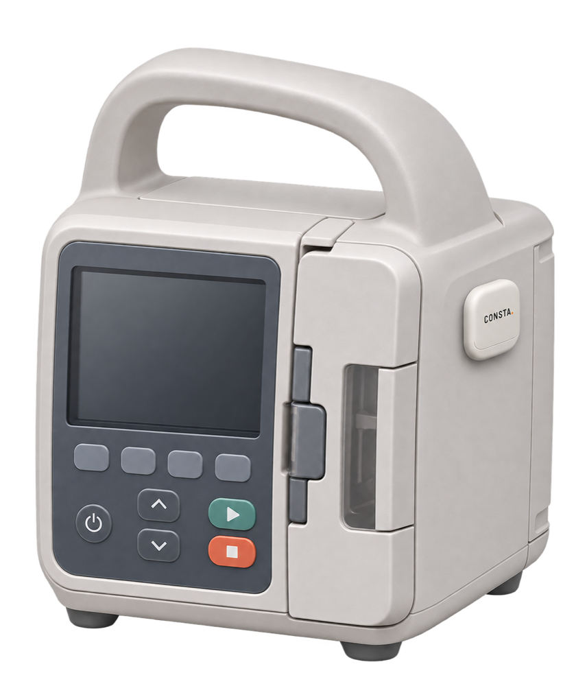
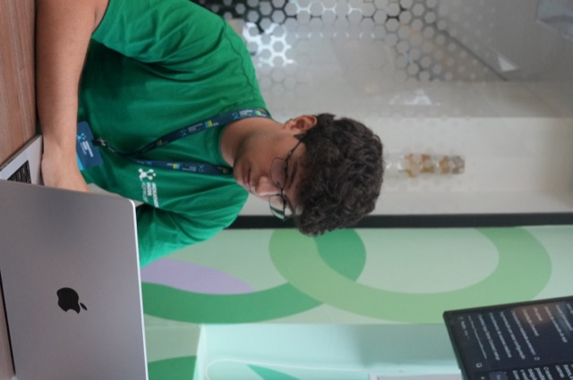
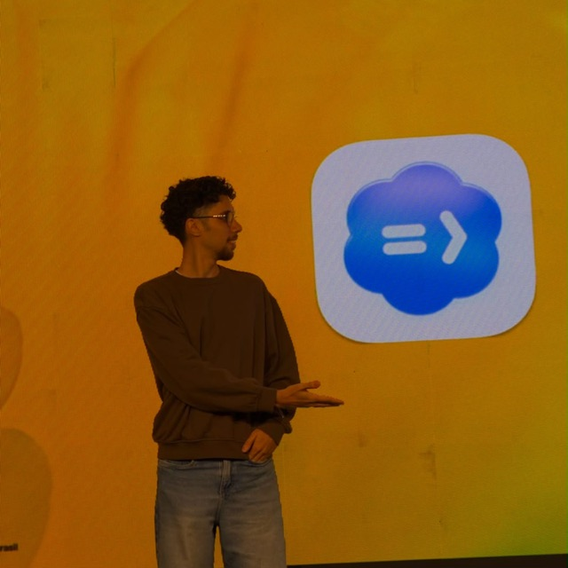
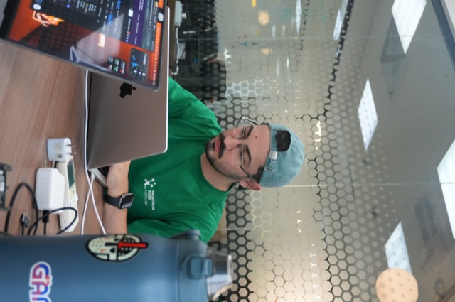
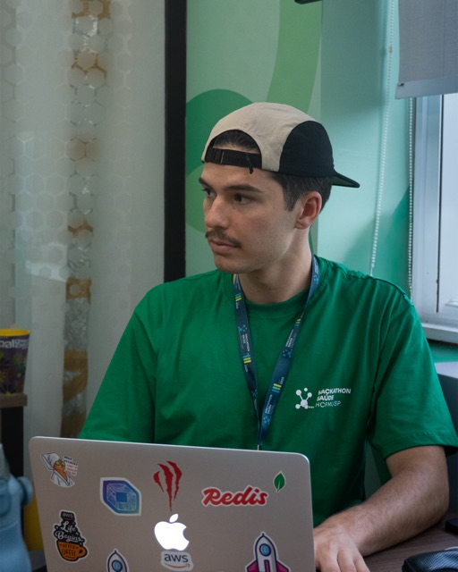

AGORA RNNatal / RN

EQUIPAMENTO PARADO
Foto: Divulgação / Agora RN
Falhas exigiram encaminhamentos e aluguel emergencial.
19 jun 2026 · histórico de 2025
GESTÃO DE ATIVOS E MANUTENÇÃO HOSPITALAR
O paciente precisa do exame. O gestor precisa encontrar o ativo, conferir a cobertura e acionar a manutenção. Tudo ao mesmo tempo.
O Consta conecta documentos, equipamentos e prazos para dar contexto ao próximo passo da sua equipe.
Em desenvolvimento · Converse com a equipe sobre um piloto.

19 jun 2026 · histórico de 2025
Hospital Celso Ramos · 13 ago 2026

06 mai 2026
PARA QUEM CUIDA DA OPERAÇÃO
01 / O QUE ESTÁ POR TRÁS DA PANE
O paciente segue precisando do atendimento. Enquanto isso, o gestor precisa reunir informações para acionar a manutenção. É esse esforço de conexão que queremos reduzir.
A informação existe.
Mas precisa estar à mão.
02 / O FLUXO CONSTA
O objetivo é reduzir a busca e a transcrição de dados, mantendo a conferência com quem conhece a operação.
Reúna os documentos do equipamento. Um contrato pode trazer várias unidades, com suas identidades e regras próprias.
DOCUMENTO DE ORIGEM PRESERVADOA IA sugere o preenchimento com evidências. A equipe revisa lacunas, corrige o necessário e aprova o plano.
A DECISÃO CONTINUA COM A EQUIPEConsulte inventário, agenda e pendências com o contrato e o responsável ligados ao ativo.
CADASTRO QUE VIRA BASE PARA GERIR03 / O QUE JÁ FOI EXERCITADO
No ensaio do pitch, o CRM real salvou cinco equipamentos e gerou cinco previsões após confirmação humana. O contrato era sintético e a extração foi preparada para a demonstração.
É uma prova do fluxo de cadastro e calendário. Tempo de cadastro, qualidade da IA externa e impacto na operação serão medidos em piloto.
Quero conhecer a demonstração04 / SMART AGENDA · PROPOSTA
A proposta da Smart Agenda é distribuir serviços dentro da janela permitida e da capacidade da equipe. A Engenharia Clínica confere e confirma a programação.
Demonstração conceitual do pitch. Não é uma programação aplicada ao CRM.

05 / LOCALIZAÇÃO · EM DESENVOLVIMENTO
A direção é usar etiquetas BLE nos equipamentos móveis e receptores fixos para atualizar o último setor detectado, sem registrar cada movimentação à mão.
Hardware, localização e compatibilidade hospitalar exigem ensaios próprios em áreas aprovadas. O CRM pode ser usado sem localização. Uma leitura não comprova disponibilidade ou liberação técnica.
06 / PRÓXIMO PASSO
Buscamos uma conversa com equipes que queiram avaliar o fluxo e construir um piloto em equipamentos e áreas aprovados pelo hospital.
São objetivos de medição. Ainda não há ganho operacional ou economia do Consta demonstrados.
Tenho interesse em conversar07 / QUEM CONSTA COM A GENTE
Conhecimento biomédico, software, produto e dados reunidos na construção do Consta.

Engenheiro biomédico

Engenheiro de software

Engenheiro de produto

Engenheiro de dados
08 / MODELO COMERCIAL EM VALIDAÇÃO
Proposta de licença anual do CRM por unidade hospitalar. Converse com a equipe sobre seu contexto e escopo.
R$ 20 mil /ano
R$ 60 mil /ano
R$ 180 mil /ano
Preços propostos para validação comercial. Incluem 20 tags na contratação inicial, sem reposição anual automática. Tags extras, receptores, implantação, integrações e treinamento à parte. Hardware e instalação em desenvolvimento e validação. Acima de 2.000 equipamentos: proposta personalizada. Limites de IA, armazenamento e suporte serão definidos antes da contratação.
Conversar sobre o Plano Business09 / VAMOS CONVERSAR
Converse com quem está construindo o produto, conheça a demonstração e descubra como participar dos próximos passos.
ANTES DE CONVERSAR
O CRM possui implementação local de cadastro, documentos e calendário. O pitch exercitou cinco cadastros e cinco previsões com dados sintéticos e extração simulada. Smart Agenda é uma proposta demonstrativa; localização BLE, hardware e validação hospitalar seguem pendentes.
A IA oferece sugestões com evidências dos documentos. A revisão e a aprovação dos planos são responsabilidade humana; datas dependem de regras determinísticas e dos dados revisados.
O CRM pode funcionar sem localização. A futura instalação de etiquetas e receptores precisa de escopo e avaliação próprios, incluindo compatibilidade com os equipamentos e as áreas autorizadas pelo hospital.
São preços propostos para validação comercial. Escopo, limites de uso, suporte, implantação e disponibilidade precisam ser acordados com a equipe antes de qualquer contratação.
A lista abre uma conversa com a equipe pelo WhatsApp. Não há garantia de acesso, prazo de lançamento ou compromisso de compra.